don`t worry, Be Happy !

|
|
don`t worry, Be Happy !
|
|
|
13 - 16 августа 2005. Соболиное озеро
Света и Паша прибыли накануне утром в Слюдянку из Улан-Удэ, с благой целью куда-нибудь уже этим летом сходить. Рюкзаки были забиты под завязку, палатка брезентовая, спальник-кокон зимний один, одеяла два. Спальник оставили за ненадобностью. Пашина мама дала тент большой, брезентуху накрыть, это хорошо.Собирались все до часу ночи. Взяли ведра плассмассовые для ягоды. Еще я взял веревку 50 метров, толстую, пререправу натянуть. По прогнозу дожди, вода в Селенгинке поднимется. День 1й, 13 авг 2005. Электричка-экспресс в 9:05 утра. Билеты непривычно дешевые. Лена, Паша, Света во 2 вагоне, а я с Андрюшкой в 3-м. Там же, из Иркутска, едет Оксана, вся готовая к походу, рюкзак большой. В Выдрино встречает мама, предлагает взять в дорогу огурцы
и помидоры :) Куда, говорит, собрались в дождь и холод... Сдали маме
Андрюшку на выходные, будет в Выдрино жить, пока мы мокнуть в горах
будем. На тропе по восточному берегу Снежной одна забава - подъемы да спуски. Да еще болотина перед первым ручьем. Да бревнышки через ручей, самая "любимая" забава Оксаны :) После ручья - большая поляна, традиционное место отдыха. Две парочки тоже отдыхают, молодые из Иркутска, пожилые из Башкотарстана, познакомились в электричке, идут на Соболиное после Аршана. Еще одна пара на поляну вышла, точнее не "пара" - у женщины за спиной не рюкзак, а ребенок ! Сидит в эдаком рюкзаке-кресле, в комбинезоне, года полтора, дождь идет, а он улыбается. Они хотели на Соболиное идти, но с маленьким через переправу не пошли. Офигеть как народ ходит ! От поляны по тропе еще пара ручьев было, проскочили не
глядя по камням да по воде. Ноги давно уже мокрые, все остальное тоже
постепенно намокает, вне зависимости от того, какой дождевик надет! На подходе к стрелке Снежной и Селенгинки, понимаю, что переправу надо на завтра переносить - в холодную воду сейчас никто не полезет. Время не позднее, но от обложных туч сплошные сумерки. Выходим на стрелку, прошли еще дальше. По пути несколько хороших полян, на одной палаточный лагерь, палаток 7-8, народа не видно, сидят по "домам", только разговоры слышно. 17:00. Пришли на полянку возле Селенгинки, на которой ночевали в прошлом году и в 2000-м. Быстро натянули тент (спасибо маме Паши), оделись потеплее и по 50 грамм из фляжки (спасибо папе Оксаны), дети не замерзли :-) Закусили салом и хлебом, стало тепло и хорошо, напала расслабуха, сегодня точно дальше не пойдем, пора варить горячее, греться и сушиться. Вечер прошел в заготовке дров, варке первого походного ужина на костре, потом палатки ставили, Паша попытался ловить рыбу, девченки сушили вещи. Дождик утихает постепенно, но просветов не видно. На поляне на бревне лежал синий купальник и хороший полиетилен, купальник был всем великоват, а вот полиэтиленом накрыли палатку Паши и Светы. Мыши наглые, ходят у костра пешком, таскают просыпаные семечки Очень любят все подсолнечное. Ночью прогрызли пакет с китайской лапшой, пришлось все лапшу в палатку положить, полночи вокруг палатки потом круги нарезали, топают как слоны. К Светке вообще на голову залезли ! Света и Паша легли головой к выходу из-за наклона, а палатка только на пуговки застегивается. Хорошо Светка в шапке спала, но мышь на голове, это круто. Они аж к нам прибежали, просились на ночевку, но злой дядя Леша не пустил :) В итоге зашили палатку изнутри. У них даже продуктов не было, чего мыши к ним лезли? Да еще, они когда пошли в палатку укладываться, там уже две мыши "улеглись" :) Одна сразу сбежала, а другая в угол забилась, чуть от разрыва сердца не сдохла :) День 2й, 14 авг 2005. Примерно 10-11 часов, проснулись, сварили завтрак. Погода
сначала дождливая была, потом дождь кончился, но все равно, в воду лезть
никто не хочет. Размотал вдоль берега веревку, длинная, до того берега
хватит. Если привязать на нашем берегу повыше, да на том повыше, то
можно посуху всем перебраться, несмотря на сильный провис - веревка
тянется, а правильно натягивать переправу никто не умеет. Все уже согласились
на такую "тарзанку", тем более что есть карабин подстраховаться. День 3й, 15 авг 2005. Под утро пошел дождь и залил весь костер. Натянули тент.
Пока готовили завтрак, я сходил на "пролив" между большим
и малым озерами, так как там самое узкое место и можно натянуть переправу,
чтобы хоть вернуться "по-человечески". Было много мыслей о
том, как закинуть веревку на тот берег, вплоть до постройки плота, но
они не реализовались. Придется видимо возвращаться обратно тем же маршрутом,
что всем не понравилось, особенно Оксане. А что делать, я уже свыкся
с тем, что повторение похода 2000 года не получилось в этот раз, погода
не дала. Тогда солнце было все дни, а теперь дождик. И вот результат
- до озера дошли, а отдыха нет, одни переходы. Да и стоянку на "нашем"
месте на том берегу заняли кто-то на лодках. Точнее на катамаранах,
которые проплыли мимо нас груженые людом и кулями под завязку, но даже
на половину не притопленные. Что-то сразу захотелось катамаранчик, такой
маленький, на пару человек. Милое дело переправляться и сплавляться.
Еще лодочник резиновый, рюкзаки возил по озеру, с собакой. День 4й, 16 авг 2005. День возвращения. Утро прохладное, но погода будет хорошая.
Завтракаем, собираем вещи. Фотаемся на прощание и домой уходим. Дорога
домой быстрая, все почти бугут, особенно Света и Паша. Опять правда
прижимы заставляют попотеть, но куда же без них на этом берегу. Проплыл
резиновый лодочник с собакой. И в заключении... Поход лично для меня тренировочный получился - наконец-то под дождем походил, и по другому берегу Селенгинки. Остальные участники дождю были не рады, да и постоянные переходы занимали много времени. Погода холодная, ни искупаться, ни позагорать толком. Короче говоря - живы, здоровы, ну и ладно ! :) Написано где-то в 2005. Белокрылов А.Ю. |
Часть текста была написана сразу после похода, потом еще была дописана, немного подредактирована для сайта. 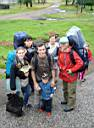 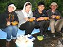 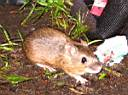 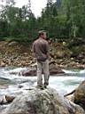 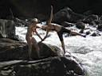 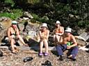 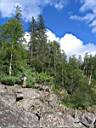 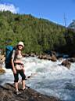 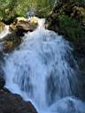 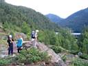 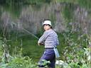 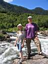 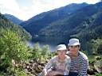 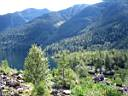 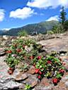 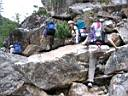 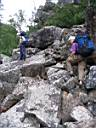 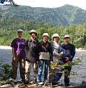 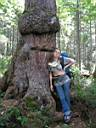 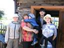 |